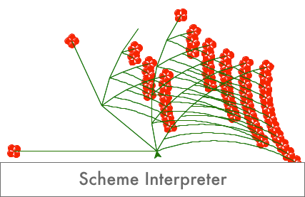
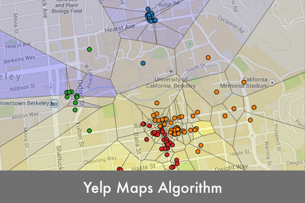
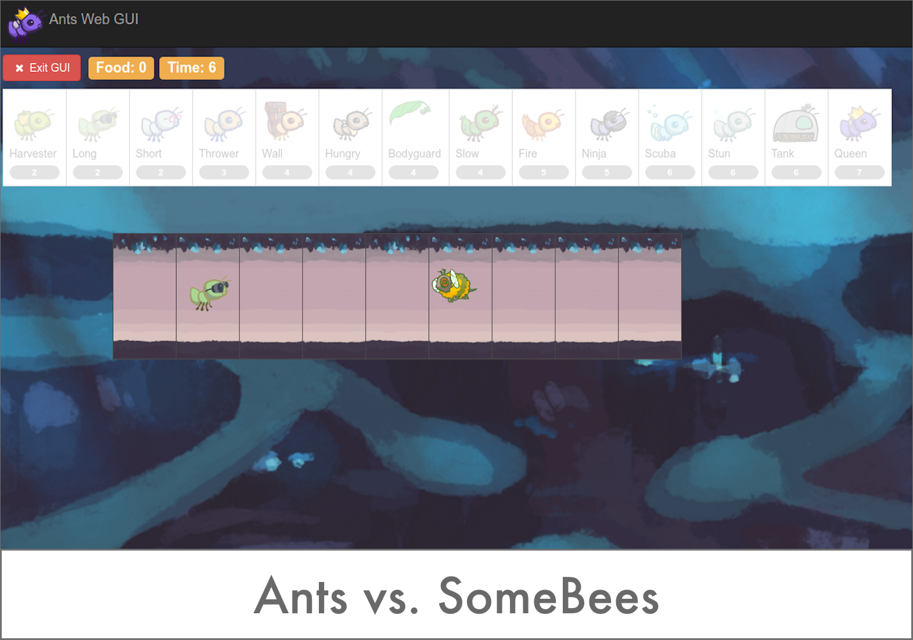

Developed an interpreter for a subset of the Scheme language in Python 3. Implemented multiple environments, macros, lambda/mu, and tail recursion in the interpreter.

Used basic machine learning concepts and a k-means algorithm to program a Voronoi diagram visualization of restaurants in Berkeley with their predicted ratings.

Created a tower defense game called Ants Vs. SomeBees (based on Plants vs Zombies) in Python. I implemented the functioning and the mechanics of multiple categories of creatures.
The project combined object-oriented programming and functional paradigms.
More to come!
Programmed and designed a travel website using HTML, CSS, and JavaScript/jQuery.
The initial UX for the landing page of my travel website.